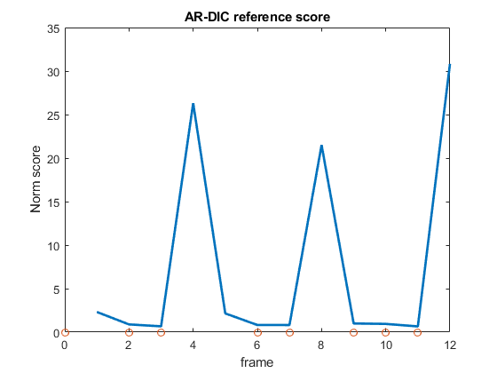

% AR_DIC_DEMO Demo for Adaptive Reference Digital Image Correlation % % This demo runs AR-DIC on the 14 frame example video (or whichever video % is specified by vidpath). Before running download the example video and % create a folder to contain the DIC output files. To setup simply set % folder paths: DIC_folder, folderpath_IJ, and vidpath. % To process the AR-DIC output run the AR_DIC_Demo_process.m script % To plot the processed results run AR_DIC_Demo_plotting.m script % % Adaptive Reference Digital Image Correlation v 1.0 2018 % Biomaterials and Mechanotransduction Lab University of Nebraska-Lincoln % % See also: % AR_DIC_DEMO_PROCESS % AR_DIC_DEMO_PLOTTING clear clc %Match path to operating system '\' on Windows and '/' on Unix-based systems %set folder paths here: DIC_folder='C:\Users\mme\Desktop\DIC_output';%set DIC output folder folderpath_IJ='C:\\Users\\mme\\Desktop\\DIC_output\\';%DIC output folder formatted for ImageJ %placing \\ after folder important vidpath='C:\\Users\\mme\\Documents\\MATLAB\\CM_contract\\Demo_CM_contract.avi'; %video to analyze (use double backslashes) %%%%%%%%%%%%%%%%%%%%%%%%%%%User options%%%%%%%%%%%%%%%%%%%%%%%%%%%%%%%%%%%% startframe=1; %set initial reference frame endframe=13; %last video frame to analyze method='fro'; %use frobenius norm method for adaptive reference comparison norm_threshold=1.5;%frame becomes new reference if score is below norm threshold stringtext='*PIV3*.txt'; %use only 3rd iteration %%%%%%%%%%%%%%%%%%%%%%%%%%End user options%%%%%%%%%%%%%%%%%%%%%%%%%%%%%%%%% %%%%%%%%%%%%Adaptive reference digital image correlation%%%%%%%%%%%%%%%%%%% %initialize, start MIJI current_directory=pwd; %get current directory currentframe=startframe+1;%current frame index refframe=startframe;%reference frame index scorekeeper=[];%initialize to hold reference frame score refstore=startframe; %store start frame as first reference Miji(false); %to start Fiji without gui: Miji(false); while currentframe<endframe+1 %Run AR-DIC while sufficient video frames exist %DIC portion: MIJ.run('AVI...', ['open=[',vidpath,'] first=',num2str(refframe),' last=' num2str(refframe)]); %open current reference frame MIJ.run('8-bit'); %convert to 8bit for plugin use MIJ.run('AVI...', ['open=[',vidpath,'] first=',num2str(currentframe),' last=' num2str(currentframe)]);% open frame to analyze MIJ.run('8-bit'); %convert to 8bit for plugin use MIJ.run('Images to Stack',['name=(',num2str(refframe),',',num2str(currentframe),')']); %make image stack (reference frame, current frame) for plugin use %run iterative PIV plugin: MIJ.run('iterative PIV(Advanced)...', [' piv1=128 sw1=256 vs1=64 piv2=64 sw2=128 vs2=32 piv3=48 sw3=96 vs3=24 correlation=0.8 batch path=[',folderpath_IJ,']']); MIJ.run('Close All');%close all ImageJ images %Adaptive Reference portion: %get DIC output from MIJI and format cd(DIC_folder) %change directory to get DIC output files PIVtext=dir(stringtext);%get text file list PIVtext_names={PIVtext.name};%get file names [~,idx]=sort_nat(PIVtext_names);%get sorting index PIVtext=PIVtext(idx);%sort files in alphanumerical order frames=length(PIVtext);%get total number of frames filename=PIVtext(frames).name;%get most recent frame M=dlmread(filename); %read in text file from ImageJ PIV dispmag=M(:,5); %transfer data to individual vectors for coordinates %calculate and store reference score: refscore=calcrefscore(dispmag,method);%calculate reference score of current frame scorekeeper(end+1)=refscore; %store reference score %If reference score is below norm threshold then set current frame as reference if refscore < norm_threshold refframe=currentframe; %set current frame as reference refstore(end+1)=refframe;%Store reference frame end currentframe=currentframe+1; %increment to next video frame end MIJ.exit; %Exit ImageJ cd(current_directory); %return to original directory figure %plot reference score versus frame plot(scorekeeper)%plot reference scores hold on scatter(refstore-1,zeros(1,length(refstore))); %mark reference frames title('AR-DIC reference score') xlabel('frame') ylabel('Norm score') hold off %EOF
ImageJ instance ended cleanly